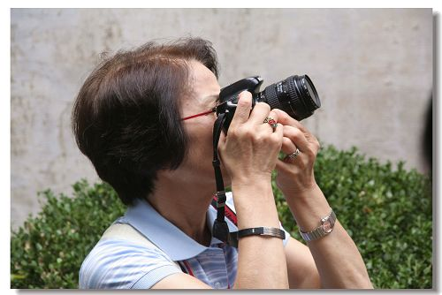
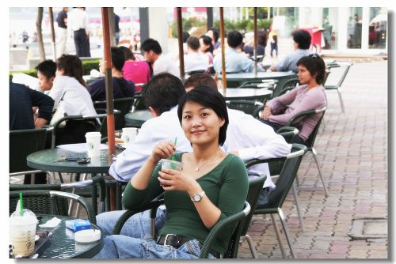
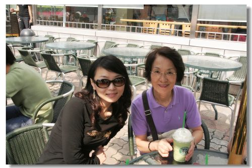
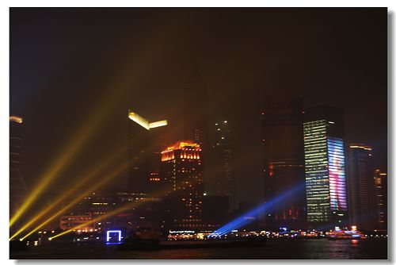

高速公路上开了将近两小时终于回到南京，视觉上忽然空了许多。这次在上海如果没有姿的指引，我一定会迷路。觉得上海的路标指示不是很清楚，路标牌没有南京的大、新、清楚，马路直行、拐弯标识全部在地面上显示，不熟悉上海道路的司机不可能顾了上面的标牌还能看到路面上的直行、拐弯标识，然而错过一个路口可能需要30分钟才能绕回目的地。
上海是个物质非常丰富的城市，当地出租司机说在上海的外国人有120万，外地人口有400万左右。在商场里看到许多爱不释手的家庭用品，我居然买了很多毛巾：D襄阳路拆掉后，据说转移到上海很远的郊区，当你行走在淮海路上时，仍然会遇见一些兜售假名牌物品的人。也许年轻的时候可以随便用什么假名牌的包包，但是现在越来越排斥仿制的东西，无论A货还是某某货都存在质量问题。我越来越看重做工和质量，是不是名牌倒是其次。根本没有太多时间逛街，姿只带我们逛了陕西路一带的小店，匆匆逛过，买了一只毛线编织的包包。Shin的母亲买了件POLO体恤，第二天便穿了，我以为日本人更讲究卫生会先洗了之后再穿呢...Shin的母亲63岁，第一次见她的晚上觉得她看上去顶多50出头，可我还是善意得说看上去40多岁，也许老人听了会更快乐一些。左手戴着OMEGA常见款式的女表，右手戴着我在欧洲看到的那种流行的黑色皮带的手饰，中间一个长方形的银色连接物，比较时尚。60多岁的妇人脸上几乎没有什么老年斑，干干净净白皙的面孔。这在中国很难见到的老妇人的装扮和皮肤。希望到了我们这代年老的时候能有更多这样讲究的人出现，出门旅行带着笔记本电脑，光学数码相机，数码卡片机，3G手机，略施粉黛，和年轻人一样喝喝啤酒，常与朋友们聚会聊天......Shin的母亲让我看到自己年老后的光明，老人也可以一样充满对生活的热情，一样善待自己的点点滴滴，日子就应该这样过才有滋味！
有一次晚饭在鹭鹭酒店吃的，菜肴可口，不过大闸蟹贵了些，一只要120元左右。大约9点多钟，我们晚饭进行到一半，服务员便开始收拾周围的餐桌摆放干净碗筷，他们愉快的抖动桌布铺在桌子上，来回拖着椅子发出令人烦躁的声音......实在忍受不了我大声要求他们停止打扫，服务员们只是放轻了手脚，打扫工作仍然继续进行着。饭后Shin向领班投诉，大致是认为他们这样不礼貌，至少要等客人用餐离开后再进行卫生打扫，并且他们的行为让客人感到我们到9点多还没结束是我们的责任，让客人有心理负担。我想这不仅仅是不礼貌的问题，这些服务员没有错，错在酒店的管理上！有时菜价也包含了一个酒店的消费档次和服务，他们的管理并未起到维护酒店良好形象的作用！这是我们中国向外国人展现的一个面。节前报纸上报道中国人出境旅游要提高素质的报道，大致谈的是大陆前往香港迪士尼乐园游玩的客人，随地吐痰乱丢杂物，甚至小孩在公共场所大小便，香港还不算走出国门，但家丑总是外扬了，大陆游客出境游的人数越来越多，维护中国人的国际形象也就越来越重要！同理，到中国的外国游客及工作的外国人也越来越多，国人素质不知道需要多少代才能达到一个良好的水平上？
这次还看到Shin的小妹妹产房分娩的录象，第一次看到脐带，居然会有那么粗？！只看了分娩到剪脐带的部分，好象生孩子很轻松，Shin的母亲说前面疼痛的过程没有拍摄，女人真是伟大，从孕育到分娩，成就一个小生命到这世界上来，不可思议~~9月初蔡蔡在MSN上向我暂别，说是即将分娩了，会有一段时间不能上网，当时挺感动的。和她在网络上认识有3年左右了，她开始经常访问这里，渐渐开始聊天熟悉，之间一直没有断过联系，我们同龄，大概了解各自状况，这应该也算是难得的网络友谊，期待看到她的小宝贝的照片，希望她生个健康的宝宝。我这段时间觉得生个健康的孩子比生什么性别的孩子要重要许多！
城市的国庆拥挤着各地的游客，大家拿着各式相机徘徊在城市的各个景点，我倒愿意和姿一直坐在浦东starbucks露天座椅上喝着冰咖啡，呆上整整一个下午，看着太阳从城市的另一边消失，华灯初上，外滩的景色开始迷人......



